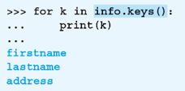

5. 第4章 組み込み型とオブジェクト¶
5.1. オブジェクト指向¶
5.2. インスタンスの管理とID¶
Python はオブジェクト指向言語
1つ1つのオブジェクトにIDを割り当てて管理
5.3. 代入の正確なイメージ¶
「3という値を表すオブジェクトがコンピュータのメモリ上のどこかに保管される。
その保管場所を示す所在地情報が、aという名前の箱に入れられる」
5.4. 代入の正確なイメージ¶
a = 2
b = b
5.5. インスタンスの同値性と同一性¶
「同値」と「同一」は異なる概念
5.6. クラスとインスタンスとメソッド¶
インスタンス
オブジェクトのこと
クラス
インスタンスの種類（型）のこと
メソッド
クラスごとに定義された機能 （関数のようなもの）
例1： 'Hello' というオブジェクト（文字列）はstrクラスのインスタンスで、lower()やcount()などのメソッドを持つ
例2：[10,20,30]というオブジェクト（リスト）はlistクラスのインスタンスで、reverse()やpop()などのメソッドを持つ
5.7. 組み込み型¶
Pythonに最初から準備されている型（クラス）
これまでに学習したもの
int型、float型、str型、list型
これから学習するもの
タプル、辞書、セット
※ いずれも複数のオブジェクトを格納するために使用する
5.8. メソッドの呼び出し¶
プログラムコードでの表記
オブジェクト.メソッド名()
例）文字列の中のo文字の数を数える
'Hello, Python'.count('o')
2
'Hello, Python' <---- オブジェクト
count() <---- メソッド名
5.9. strクラスのメソッド¶
strクラスには文字列を操作するメソッドが定義されている
count(x) |
xが文字列にいくつ含まれるかを返す |
lower() |
すべての文字を小文字にした文字列を返す |
upper() |
すべての文字を大文字にした文字列を返す |
split(x) |
文字列をxで分割した結果をリストで返す |
replace(x, y) |
文字列に含まれるxをyに置換した結果を返す |
'Hello, Python'.count('o')
2
'PYTHON'.lower()
python
'python'.upper()
PYTHON
'2021-12-31'.split('-')
['2021', '12', '31']
'Java言語'.replace('Java', 'Python')
'Python言語'
5.10. strクラスのformatメソッド¶
文字列に含まれる{} への変数の値の埋め込み
year = 2021
month = 4
day = 10
message = '今日は{}年{}月{}日です'.format(year, month, day)
print(message)
今日は2021年4月10日です <---- 文字列の中の{}に数字が埋め込まれた
{}の中でのインデックスの指定
year = 2021
month = 4
day = 10
message = '今日は{1}月{2}日です。 西暦{0}年です。'.format(year, month, day)
print(message)
今日は4月10日です。 西暦2021年です。
{1}にformatの1番目のmonthが埋め込まれる
{2}にformatの2番目のdayが埋め込まれる
{0}にformatの0番目のyearが埋め込まれる
※ インデックスは0から始まる
5.11. strクラスのformatメソッド¶
{}の中での書式を指定できる
{インデックス番号:書式} のように記述する
（インデックス番号は省略可）
書式の例
: 書式指定子。フォーマット指定の開始。
コロンの後ろに書式指定子を記述して、特定の形式で表示させることができる
.3f 小数点以下3桁まで出力
, 3桁ごとにカンマで区切る
>5 5文字分の幅に右寄せする
'1/3={:.3f}'.format(1/3)
1/3=0.333
'{:,}円'.format(1000000)
1,000,000円
'{:>5}'.format(123)
123
5.12. in 演算子¶
文字列1 が 文字列2 に含まれると True、そうでないなら False になる
'cat' in 'catch'
True
'Z' in 'ABCDE'
False
s1 = 'py'
s2 = 'python'
s1 in s2
True
5.13. リストとタプル¶
5.14. listクラスの主なメソッド¶
a = [10, 20, 30, 40]
aはListクラスのインスタンス
5.15. メソッドを使ったリストの操作¶
a = [10, 20, 30, 40]
a.append(100)
a
[10, 20, 30, 40, 100]
a.pop()
100
a
[10, 20, 30, 40]
a.reverse()
a
[40, 30, 20, 10]
a.index(20)
2
5.16. メソッド以外のリストの操作¶
a = [10, 20, 30, 40]
del a[1]
a
[10, 30, 40]
a = a + [0, 1]
a
[10, 30, 40, 0, 1]
1 in a
True
2 in a
False
len(a)
5
sorted(a)
[0, 1, 10, 30, 40]
sorted(a, reverse=True)
[40, 30, 10, 1, 0]
5.17. 内包表記¶
for文を用いてリストの要素を作成することができる
例
data = [2**n for n in range(1, 11)]
data
[2, 4, 8, 16, 32, 64, 128, 256, 512, 1024]
[str(n)+'月' for n in range(1, 13)]
['1月', '2月', '3月', '4月', '5月', '6月', '7月', '8月', '9月', '10月', '11月', '12月']
5.18. if 構文を含む内包表記¶
例
data0 = ['apple', 'orange', 'banana', 'avocado']
data1 = [s for s in data0 if s[0] == 'a']
print(data1)
['apple', 'avocado'] <---- aで始まる単語だけが格納される
5.19. リストを含むリスト¶
data = [[1, 2], [3, 4, 5]]
data[0][0] <---- 先頭のリストの先頭の要素を参照
1
data[0][1] <---- 先頭のリストの2番目の要素を参照
2
data[1][0] <---- 2番目のリストの先頭の要素を参照
3
data[1][1] <---- 2番目のリストの2番目の要素を参照
4
data[1][2] <---- 2番目のリストの3番目の要素を参照
5
5.20. タプル¶
リスト同様に複数の要素を格納する
（コレクションとよぶ）
リスト
a = [1, 2, 3, 4]
a
[1, 2, 3, 4]
a[0]
1
a[0] = 99
a
[99, 2, 3, 4]
タプル
a = (1, 2, 3, 4)
a
(1, 2, 3, 4)
a[0]
1
a[0] = 99
エラー
タプルは要素の値を変更できない
5.21. ( )の省略とアンパック代入¶
タプルの作成時に ( )を省略できる
5.22. 辞書と集合（セット）¶
5.23. 辞書¶
キーと値のペアを格納
インデックスの代わりにキーを使って値を取得できる
info = {'firstname':'太郎', 'lastname':'山田', 'address': '茨城県つくば市 99-99'}
info['firstname']
太郎
5.24. 辞書の要素の取得¶
keysメソッドによるすべてのキーの取得

valuesメソッドによるすべての値の取得
itemsメソッドによるすべての要素（キーと値のペアを格納したタプル）の取得
5.25. 辞書の操作¶
info = {'firstname':'太郎', 'lastname':'山田', 'address': '茨城県つくば市 99-99'}
info.get('firstname')
太郎
info.get('tel')
None
info['tel'] = '090-000-0000'
info.get('tel')
'090-000-0000'
del info['tel']
len(info)
3
'age' in info
False
'firstname' in info
True
5.26. 辞書の要素の並べ替え¶
sorted 関数を使うと、辞書の要素を昇順に取得できる（キーを基準）
data = {'b':5, 'c':2, 'a':8, 'd':7 }
print(sorted(data.items()))
[('a', 8), ('b', 5), ('c', 2), ('d', 7)]
sorted 関数に key=lambda x:x[1] を指定すると、値を基準とした昇順に取得できる
data = {'b':5, 'c':2, 'a':8, 'd':7 }
print(sorted(data.items(), key=lambda x:x[1]))
[('c', 2), ('b', 5), ('d', 7), ('a', 8)]
5.27. セット¶
値を格納
要素の重複を許さない。順序が無い。
リストは [1, 2, 3]
タプルは (1, 2, 3)
セットは {1, 2, 3}
a = {'A', 'B', 'C', 'D'}
a
{'A', 'B', 'C', 'D'}
a = {'A', 'B', 'B', 'C', 'C', 'C'}
a
{'A', 'B', 'C'}
5.28. セットの操作¶
data = [1, 2, 3]
a = set(data)
a
{1, 2, 3}
set1 = {'A', 'B', 'C'}
set2 = {'B', 'C'}
set1.issubset(set2)
False
set2.issubset(set1)
True
5.29. セットどうしの演算（集合演算）¶
set1 = {'A', 'B', 'C'}
set2 = {'A', 'B', 'D'}
set1 | set2
{'D', 'B', 'C', 'A'}
set1 & set2
{'A', 'B'}
set1 - set2
{'C'}
set1 ^ set2
{'C', 'D'}
5.30. 基本型の性質¶
変更可能（ミュータブル）
反復可能（イテラブル）
順序を持つ（シーケンス）
5.31. 基本型の性質¶
5.32. ミュータブルな型とイミュータブルな型¶
ミュータブルな型：値を変更できる
list型、dict型、set型（リスト、辞書、セット）イミュータブルな型：値を変更できない
int型、float型、bool型、str型、tuple型
（数値、真偽値、文字列、タプル）
※ インスタンス（オブジェクト）そのものを取り換えないと値を変えられない
5.33. ミュータブルな型とイミュータブルな型¶
変数aの値を変える
変数aが参照するオブジェクトが別のものに替わる
a = 2
id(a)
140735461447360
a = 3
id(a)
140735461447392
変数aの要素の値を変える
変数aが参照するオブジェクトは変わらない
a = [1, 2, 3]
id(a)
2103730545344
a[0] = 3
id(a)
2103730545344
5.34. 反復可能なオブジェクト¶
反復可能なオブジェクト（イテラブルなオブジェクト）
for a in xxxxxxx:
print(a)
※ for 構文で1つ1つの要素を参照できる
文字列、セット、タプル、リスト、辞書
（str型、tuple型、list型、dict型、set型）
for a in 'Python':
... print(a)
P
y
t
h
o
n
for a in {1, 2, 3}:
... print(a)
1
2
3
5.35. 順序を持つオブジェクト¶
a[0], a[1]のようにインデックスで要素を参照できる
（シーケンス型のオブジェクト）
文字列、リスト、タプル
（str型、list型、 tuple型）
a = 'Python'
a[2]
't'
a = (1, 2, 3)
a[2]
3
5.36. スライス式¶
スライス式でインデックスの範囲を指定できる
[start:end] ← start ～ (end-1)の範囲
a = 'Python'
a[1:3]
'yt'
a = (0, 1, 2, 3, 4)
a[2:5]
(2, 3, 4)
[start:end] start または end を省略できる。
省略した場合は、それぞれ0と（要素数）を指定したものとみなされる。
a = 'Python'
a[:3]
'Pyt'
a = (0, 1, 2, 3, 4)
a[2:]
(2, 3, 4)
5.37. 基本型の性質¶
5.38. 練習問題¶
5.39. 問題 1¶
次の文章の空欄に入れるべき語句を答えてください。
・ Pythonは [ (1) ] 指向型の言語であり、クラスは[ (1) ]の属性や機能を定義したものです。
・ 'Hello'や'Python'といった文字列はstr型のオブジェクトですが、別の表現をすると、strクラスの [ (2) ] である、ということができます。
・ strクラスには、文字列に含まれる文字を小文字に変換するlowerという[ (3) ]があります。
・ a == bという式の値がTrueであったとき、aとbは [ (4) ] であるといい、a is bという式の値がTrueであったとき、aとbは [ (5) ] であるといいます。
5.40. 問題 1（解答）¶
次の文章の空欄に入れるべき語句を答えてください。
・ Pythonは [ オブジェクト ] 指向型の言語であり、クラスは[オブジェクト ]の属性や機能を定義したものです。
・ 'Hello'や'Python'といった文字列はstr型のオブジェクトですが、別の表現をすると、strクラスの [ インスタンス ] である、ということができます。
・ strクラスには、文字列に含まれる文字を小文字に変換するlowerという[メソッド]があります。
・ a == bという式の値がTrueであったとき、aとbは [ 同値 ] であるといい、a is bという式の値がTrueであったとき、aとbは [ 同一 ] であるといいます。
5.41. 問題 2¶
n 番目の要素の値がn * nであるようなリストを、内包表記を使って作成してください。ただし、要素数は10とします。
5.42. 問題 2（解答）¶
n 番目の要素の値がn * nであるようなリストを、内包表記を使って作成してください。ただし、要素数は10とします。
[n * n for n in range(1, 11)]
5.43. 問題 3¶
次の説明文が、リスト、タプル、辞書、セットのいずれに該当するか、答えてください（複数が該当する場合もあります）。
（1） キーと値のペアを格納する
（2） 要素の値の重複が許されない
（3） 要素の値を変更できない
（4） インデックスで要素にアクセスできる
5.44. 問題 3（解答）¶
次の説明文が、リスト、タプル、辞書、セットのいずれに該当するか、答えてください（複数が該当する場合もあります）。
（1） キーと値のペアを格納する 辞書
（2） 要素の値の重複が許されない セット
（3） 要素の値を変更できない タプル
（4） インデックスで要素にアクセスできる リストとタプル
5.45. 問題 4¶
下記の表は、基本型が、どのような性質を持つかをまとめたものです。空欄に対して、○か×を入れてください。
5.46. 問題 4（解答）¶
下記の表は、基本型が、どのような性質を持つかをまとめたものです。空欄に対して、○か×を入れてください。